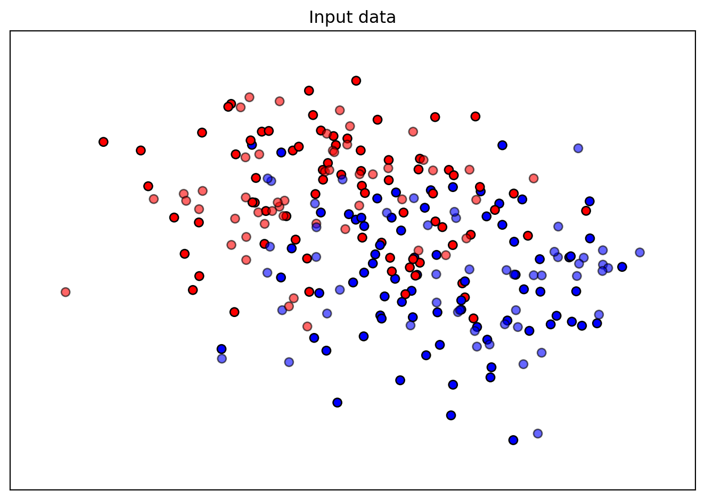
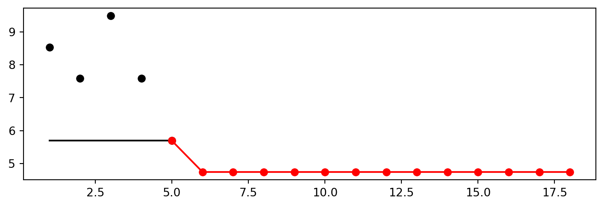
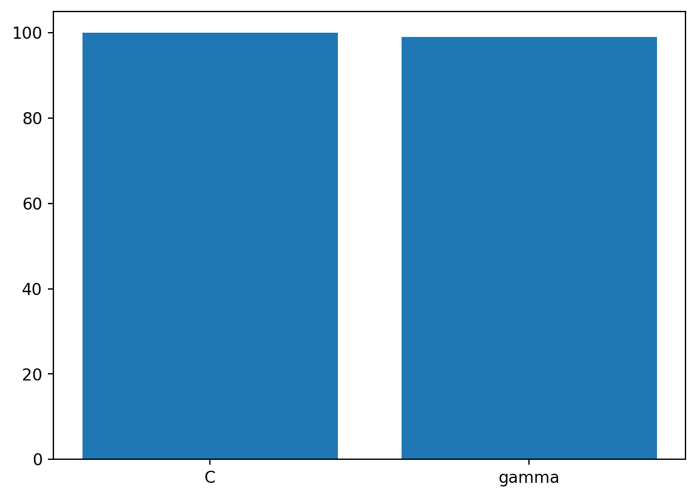
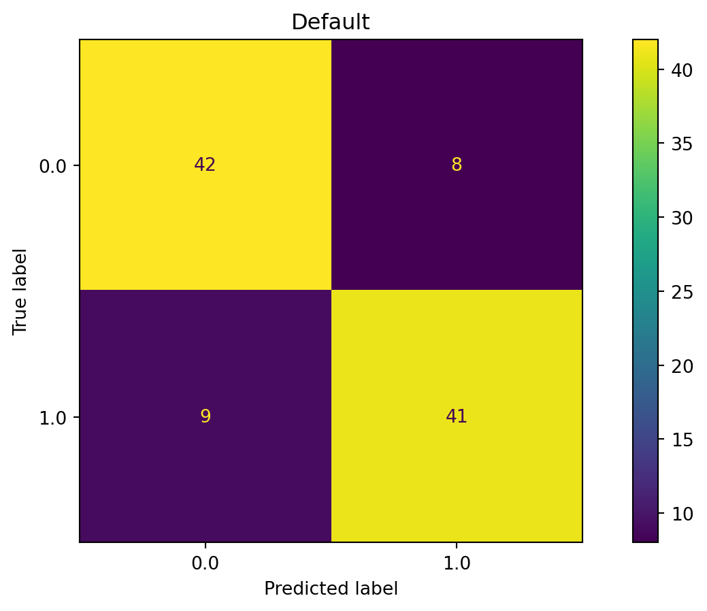
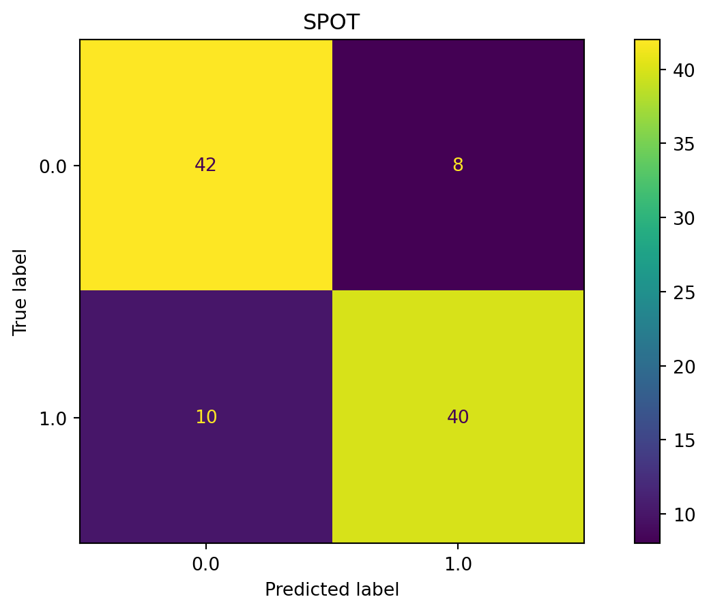
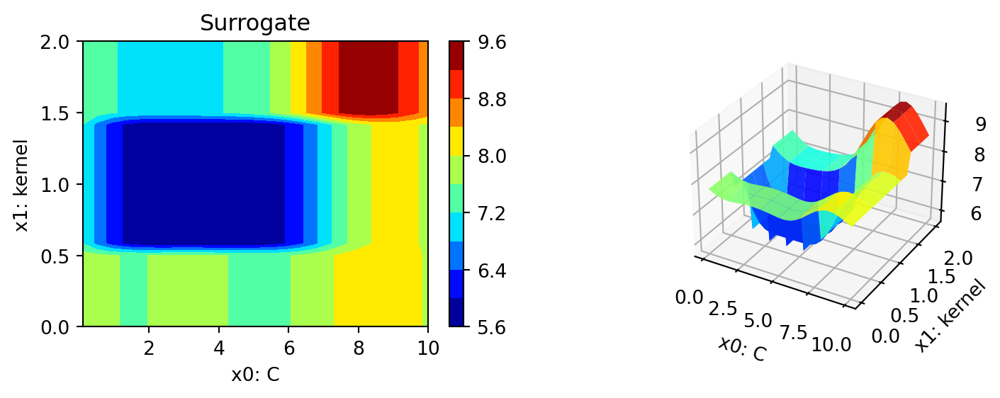

pip list | grep "spot[RiverPython]"spotPython 0.2.38
spotRiver 0.0.93Note: you may need to restart the kernel to use updated packages.This document refers to the following software versions:
python: 3.10.10pip list | grep "spot[RiverPython]"spotPython 0.2.38
spotRiver 0.0.93Note: you may need to restart the kernel to use updated packages.spotPython can be installed via pip. Alternatively, the source code can be downloaded from gitHub: https://github.com/sequential-parameter-optimization/spotPython.
!pip install spotPythonspotPython from gitHub.# import sys
# !{sys.executable} -m pip install --upgrade build
# !{sys.executable} -m pip install --upgrade --force-reinstall spotPythonBefore we consider the detailed experimental setup, we select the parameters that affect run time and the initial design size.
MAX_TIME = 1
INIT_SIZE = 5import os
import copy
import socket
from datetime import datetime
from dateutil.tz import tzlocal
start_time = datetime.now(tzlocal())
HOSTNAME = socket.gethostname().split(".")[0]
experiment_name = '10-sklearn' + "_" + HOSTNAME + "_" + str(MAX_TIME) + "min_" + str(INIT_SIZE) + "init_" + str(start_time).split(".", 1)[0].replace(' ', '_')
experiment_name = experiment_name.replace(':', '-')
print(experiment_name)
if not os.path.exists('./figures'):
os.makedirs('./figures')10-sklearn_b4a7f5bf-ab7d-4511-9551-9bdfcf53422e_1min_5init_2023-06-18_22-56-57fun_control Dictionarytensorboard_path to None if you are working under Windows.from spotPython.utils.init import fun_control_init
fun_control = fun_control_init(task="classification",
tensorboard_path="runs/10_spot_hpt_sklearn_classification")Randomly generate classification data.
import pandas as pd
import numpy as np
from sklearn.model_selection import train_test_split
from sklearn.datasets import make_moons, make_circles, make_classification
n_features = 2
n_samples = 250
target_column = "y"
ds = make_moons(n_samples, noise=0.5, random_state=0)
X, y = ds
X_train, X_test, y_train, y_test = train_test_split(
X, y, test_size=0.4, random_state=42
)
train = pd.DataFrame(np.hstack((X_train, y_train.reshape(-1, 1))))
test = pd.DataFrame(np.hstack((X_test, y_test.reshape(-1, 1))))
train.columns = [f"x{i}" for i in range(1, n_features+1)] + [target_column]
test.columns = [f"x{i}" for i in range(1, n_features+1)] + [target_column]
train.head()| x1 | x2 | y | |
|---|---|---|---|
| 0 | 1.083978 | -1.246111 | 1.0 |
| 1 | 0.074916 | 0.868104 | 0.0 |
| 2 | -1.668535 | 0.751752 | 0.0 |
| 3 | 1.286597 | 1.454165 | 0.0 |
| 4 | 1.387021 | 0.448355 | 1.0 |
import matplotlib.pyplot as plt
from matplotlib.colors import ListedColormap
x_min, x_max = X[:, 0].min() - 0.5, X[:, 0].max() + 0.5
y_min, y_max = X[:, 1].min() - 0.5, X[:, 1].max() + 0.5
cm = plt.cm.RdBu
cm_bright = ListedColormap(["#FF0000", "#0000FF"])
ax = plt.subplot(1, 1, 1)
ax.set_title("Input data")
# Plot the training points
ax.scatter(X_train[:, 0], X_train[:, 1], c=y_train, cmap=cm_bright, edgecolors="k")
# Plot the testing points
ax.scatter(
X_test[:, 0], X_test[:, 1], c=y_test, cmap=cm_bright, alpha=0.6, edgecolors="k"
)
ax.set_xlim(x_min, x_max)
ax.set_ylim(y_min, y_max)
ax.set_xticks(())
ax.set_yticks(())
plt.tight_layout()
plt.show()
n_samples = len(train)
# add the dataset to the fun_control
fun_control.update({"data": None, # dataset,
"train": train,
"test": test,
"n_samples": n_samples,
"target_column": target_column})Data preprocesssing can be very simple, e.g., you can ignore it. Then you would choose the prep_model “None”:
prep_model = None
fun_control.update({"prep_model": prep_model})A default approach for numerical data is the StandardScaler (mean 0, variance 1). This can be selected as follows:
from sklearn.preprocessing import StandardScaler
prep_model = StandardScaler()
fun_control.update({"prep_model": prep_model})Even more complicated pre-processing steps are possible, e.g., the follwing pipeline:
# categorical_columns = []
# one_hot_encoder = OneHotEncoder(handle_unknown="ignore", sparse_output=False)
# prep_model = ColumnTransformer(
# transformers=[
# ("categorical", one_hot_encoder, categorical_columns),
# ],
# remainder=StandardScaler(),
# )algorithm) and core_model_hyper_dictThe selection of the algorithm (ML model) that should be tuned is done by specifying the its name from the sklearn implementation. For example, the SVC support vector machine classifier is selected as follows:
from sklearn.linear_model import RidgeCV
from sklearn.ensemble import RandomForestClassifier
from sklearn.svm import SVC
from sklearn.linear_model import LogisticRegression
from sklearn.neighbors import KNeighborsClassifier
from sklearn.ensemble import GradientBoostingClassifier
from sklearn.ensemble import GradientBoostingRegressor
from sklearn.linear_model import ElasticNet
from spotPython.hyperparameters.values import add_core_model_to_fun_control
from spotPython.data.sklearn_hyper_dict import SklearnHyperDict
from spotPython.fun.hypersklearn import HyperSklearn# core_model = RidgeCV
# core_model = GradientBoostingRegressor
# core_model = ElasticNet
# core_model = RandomForestClassifier
core_model = SVC
# core_model = LogisticRegression
# core_model = KNeighborsClassifier
# core_model = GradientBoostingClassifier
fun_control = add_core_model_to_fun_control(core_model=core_model,
fun_control=fun_control,
hyper_dict=SklearnHyperDict,
filename=None)Now fun_control has the information from the JSON file. The corresponding entries for the core_model class are shown below.
fun_control['core_model_hyper_dict']{'C': {'type': 'float',
'default': 1.0,
'transform': 'None',
'lower': 0.1,
'upper': 10.0},
'kernel': {'levels': ['linear', 'poly', 'rbf', 'sigmoid'],
'type': 'factor',
'default': 'rbf',
'transform': 'None',
'core_model_parameter_type': 'str',
'lower': 0,
'upper': 3},
'degree': {'type': 'int',
'default': 3,
'transform': 'None',
'lower': 3,
'upper': 3},
'gamma': {'levels': ['scale', 'auto'],
'type': 'factor',
'default': 'scale',
'transform': 'None',
'core_model_parameter_type': 'str',
'lower': 0,
'upper': 1},
'coef0': {'type': 'float',
'default': 0.0,
'transform': 'None',
'lower': 0.0,
'upper': 0.0},
'shrinking': {'levels': [0, 1],
'type': 'factor',
'default': 0,
'transform': 'None',
'core_model_parameter_type': 'bool',
'lower': 0,
'upper': 1},
'probability': {'levels': [0, 1],
'type': 'factor',
'default': 0,
'transform': 'None',
'core_model_parameter_type': 'bool',
'lower': 0,
'upper': 1},
'tol': {'type': 'float',
'default': 0.001,
'transform': 'None',
'lower': 0.0001,
'upper': 0.01},
'cache_size': {'type': 'float',
'default': 200,
'transform': 'None',
'lower': 100,
'upper': 400},
'break_ties': {'levels': [0, 1],
'type': 'factor',
'default': 0,
'transform': 'None',
'core_model_parameter_type': 'bool',
'lower': 0,
'upper': 1}}hyper_dict Hyperparameters for the Selected Algorithm aka core_modelspotPython provides functions for modifying the hyperparameters, their bounds and factors as well as for activating and de-activating hyperparameters without re-compilation of the Python source code. These functions were described in Section 14.6.
Numeric and boolean values can be modified using the modify_hyper_parameter_bounds method. For example, to change the tol hyperparameter of the SVC model to the interval [1e-3, 1e-2], the following code can be used:
from spotPython.hyperparameters.values import modify_hyper_parameter_bounds
fun_control = modify_hyper_parameter_bounds(fun_control, "tol", bounds=[1e-3, 1e-2])
# fun_control = modify_hyper_parameter_bounds(fun_control, "min_samples_split", bounds=[3, 20])
#fun_control = modify_hyper_parameter_bounds(fun_control, "merit_preprune", bounds=[0, 0])
fun_control["core_model_hyper_dict"]["tol"]{'type': 'float',
'default': 0.001,
'transform': 'None',
'lower': 0.001,
'upper': 0.01}Factors can be modified with the modify_hyper_parameter_levels function. For example, to exclude the sigmoid kernel from the tuning, the kernel hyperparameter of the SVC model can be modified as follows:
from spotPython.hyperparameters.values import modify_hyper_parameter_levels
fun_control = modify_hyper_parameter_levels(fun_control, "kernel", ["linear", "poly", "rbf"])
fun_control["core_model_hyper_dict"]["kernel"]{'levels': ['linear', 'poly', 'rbf'],
'type': 'factor',
'default': 'rbf',
'transform': 'None',
'core_model_parameter_type': 'str',
'lower': 0,
'upper': 2}Optimizers are described in Section 14.6.1.
There are two metrics:
metric_river is used for the river based evaluation via eval_oml_iter_progressive.metric_sklearn is used for the sklearn based evaluation.from sklearn.metrics import mean_absolute_error, accuracy_score, roc_curve, roc_auc_score, log_loss, mean_squared_error
fun_control.update({
"metric_sklearn": log_loss,
})If the key "predict_proba" is set to True, the class probabilities are predicted. False is the default, i.e., the classes are predicted.
fun_control.update({
"predict_proba": False,
})The following code passes the information about the parameter ranges and bounds to spot.
# extract the variable types, names, and bounds
from spotPython.hyperparameters.values import (get_bound_values,
get_var_name,
get_var_type,)
var_type = get_var_type(fun_control)
var_name = get_var_name(fun_control)
fun_control.update({"var_type": var_type,
"var_name": var_name})
lower = get_bound_values(fun_control, "lower")
upper = get_bound_values(fun_control, "upper")from spotPython.utils.eda import gen_design_table
print(gen_design_table(fun_control))| name | type | default | lower | upper | transform |
|-------------|--------|-----------|---------|---------|-------------|
| C | float | 1.0 | 0.1 | 10 | None |
| kernel | factor | rbf | 0 | 2 | None |
| degree | int | 3 | 3 | 3 | None |
| gamma | factor | scale | 0 | 1 | None |
| coef0 | float | 0.0 | 0 | 0 | None |
| shrinking | factor | 0 | 0 | 1 | None |
| probability | factor | 0 | 0 | 1 | None |
| tol | float | 0.001 | 0.001 | 0.01 | None |
| cache_size | float | 200.0 | 100 | 400 | None |
| break_ties | factor | 0 | 0 | 1 | None |The objective function is selected next. It implements an interface from sklearn’s training, validation, and testing methods to spotPython.
from spotPython.fun.hypersklearn import HyperSklearn
fun = HyperSklearn().fun_sklearnSpot Optimizermax_time).initi_size, 20 points) is not considered.from spotPython.hyperparameters.values import get_default_hyperparameters_as_array
hyper_dict=SklearnHyperDict().load()
X_start = get_default_hyperparameters_as_array(fun_control, hyper_dict)
X_startarray([[1.e+00, 2.e+00, 3.e+00, 0.e+00, 0.e+00, 0.e+00, 0.e+00, 1.e-03,
2.e+02, 0.e+00]])import numpy as np
from spotPython.spot import spot
from math import inf
spot_tuner = spot.Spot(fun=fun,
lower = lower,
upper = upper,
fun_evals = inf,
fun_repeats = 1,
max_time = MAX_TIME,
noise = False,
tolerance_x = np.sqrt(np.spacing(1)),
var_type = var_type,
var_name = var_name,
infill_criterion = "y",
n_points = 1,
seed=123,
log_level = 50,
show_models= False,
show_progress= True,
fun_control = fun_control,
design_control={"init_size": INIT_SIZE,
"repeats": 1},
surrogate_control={"noise": True,
"cod_type": "norm",
"min_theta": -4,
"max_theta": 3,
"n_theta": len(var_name),
"model_fun_evals": 10_000,
"log_level": 50
})
spot_tuner.run(X_start=X_start)spotPython tuning: 5.691103166702708 [----------] 2.83% spotPython tuning: 5.691103166702708 [----------] 4.69% spotPython tuning: 5.691103166702708 [#---------] 6.24% spotPython tuning: 5.691103166702708 [#---------] 7.72% spotPython tuning: 5.691103166702708 [#---------] 9.17% spotPython tuning: 5.691103166702708 [#---------] 11.59% spotPython tuning: 5.691103166702708 [#---------] 13.89% spotPython tuning: 5.691103166702708 [##--------] 16.16% spotPython tuning: 5.691103166702708 [##--------] 18.53% spotPython tuning: 5.691103166702708 [##--------] 20.82% spotPython tuning: 5.691103166702708 [##--------] 23.33% spotPython tuning: 5.691103166702708 [###-------] 25.98% spotPython tuning: 5.691103166702708 [###-------] 34.40% spotPython tuning: 5.691103166702708 [#####-----] 46.77% spotPython tuning: 5.691103166702708 [######----] 59.97% spotPython tuning: 5.691103166702708 [#######---] 72.81% spotPython tuning: 5.691103166702708 [#########-] 85.41% spotPython tuning: 5.691103166702708 [##########] 97.98% spotPython tuning: 5.691103166702708 [##########] 100.00% Done...
<spotPython.spot.spot.Spot at 0x11cf34e20>SAVE = False
LOAD = False
if SAVE:
result_file_name = "res_" + experiment_name + ".pkl"
with open(result_file_name, 'wb') as f:
pickle.dump(spot_tuner, f)
if LOAD:
result_file_name = "res_ch10-friedman-hpt-0_maans03_60min_20init_1K_2023-04-14_10-11-19.pkl"
with open(result_file_name, 'rb') as f:
spot_tuner = pickle.load(f)After the hyperparameter tuning run is finished, the progress of the hyperparameter tuning can be visualized. The following code generates the progress plot from ?fig-progress.
spot_tuner.plot_progress(log_y=False,
filename="./figures/" + experiment_name+"_progress.png")
print(gen_design_table(fun_control=fun_control,
spot=spot_tuner))| name | type | default | lower | upper | tuned | transform | importance | stars |
|-------------|--------|-----------|---------|---------|----------------------|-------------|--------------|---------|
| C | float | 1.0 | 0.1 | 10.0 | 3.6280771109650245 | None | 1.14 | * |
| kernel | factor | rbf | 0.0 | 2.0 | 1.0 | None | 100.00 | *** |
| degree | int | 3 | 3.0 | 3.0 | 3.0 | None | 0.00 | |
| gamma | factor | scale | 0.0 | 1.0 | 0.0 | None | 0.00 | |
| coef0 | float | 0.0 | 0.0 | 0.0 | 0.0 | None | 0.00 | |
| shrinking | factor | 0 | 0.0 | 1.0 | 1.0 | None | 0.00 | |
| probability | factor | 0 | 0.0 | 1.0 | 0.0 | None | 0.00 | |
| tol | float | 0.001 | 0.001 | 0.01 | 0.006642600916881275 | None | 0.00 | |
| cache_size | float | 200.0 | 100.0 | 400.0 | 202.03372626175258 | None | 0.00 | |
| break_ties | factor | 0 | 0.0 | 1.0 | 1.0 | None | 0.00 | |spot_tuner.plot_importance(threshold=0.025, filename="./figures/" + experiment_name+"_importance.png")
from spotPython.hyperparameters.values import get_default_values, transform_hyper_parameter_values
values_default = get_default_values(fun_control)
values_default = transform_hyper_parameter_values(fun_control=fun_control, hyper_parameter_values=values_default)
values_default{'C': 1.0,
'kernel': 'rbf',
'degree': 3,
'gamma': 'scale',
'coef0': 0.0,
'shrinking': 0,
'probability': 0,
'tol': 0.001,
'cache_size': 200.0,
'break_ties': 0}from sklearn.pipeline import make_pipeline
model_default = make_pipeline(fun_control["prep_model"], fun_control["core_model"](**values_default))
model_defaultPipeline(steps=[('standardscaler', StandardScaler()),
('svc',
SVC(break_ties=0, cache_size=200.0, probability=0,
shrinking=0))])In a Jupyter environment, please rerun this cell to show the HTML representation or trust the notebook. Pipeline(steps=[('standardscaler', StandardScaler()),
('svc',
SVC(break_ties=0, cache_size=200.0, probability=0,
shrinking=0))])StandardScaler()
SVC(break_ties=0, cache_size=200.0, probability=0, shrinking=0)
X = spot_tuner.to_all_dim(spot_tuner.min_X.reshape(1,-1))
print(X)[[3.62807711e+00 1.00000000e+00 3.00000000e+00 0.00000000e+00
0.00000000e+00 1.00000000e+00 0.00000000e+00 6.64260092e-03
2.02033726e+02 1.00000000e+00]]from spotPython.hyperparameters.values import assign_values, return_conf_list_from_var_dict
v_dict = assign_values(X, fun_control["var_name"])
return_conf_list_from_var_dict(var_dict=v_dict, fun_control=fun_control)[{'C': 3.6280771109650245,
'kernel': 'poly',
'degree': 3,
'gamma': 'scale',
'coef0': 0.0,
'shrinking': 1,
'probability': 0,
'tol': 0.006642600916881275,
'cache_size': 202.03372626175258,
'break_ties': 1}]from spotPython.hyperparameters.values import get_one_sklearn_model_from_X
model_spot = get_one_sklearn_model_from_X(X, fun_control)
model_spotPipeline(steps=[('standardscaler', StandardScaler()),
('svc',
SVC(C=3.6280771109650245, break_ties=1,
cache_size=202.03372626175258, kernel='poly',
probability=0, shrinking=1, tol=0.006642600916881275))])In a Jupyter environment, please rerun this cell to show the HTML representation or trust the notebook. Pipeline(steps=[('standardscaler', StandardScaler()),
('svc',
SVC(C=3.6280771109650245, break_ties=1,
cache_size=202.03372626175258, kernel='poly',
probability=0, shrinking=1, tol=0.006642600916881275))])StandardScaler()
SVC(C=3.6280771109650245, break_ties=1, cache_size=202.03372626175258,
kernel='poly', probability=0, shrinking=1, tol=0.006642600916881275)from spotPython.plot.validation import plot_roc
plot_roc([model_default, model_spot], fun_control, model_names=["Default", "Spot"])
from spotPython.plot.validation import plot_confusion_matrix
plot_confusion_matrix(model_default, fun_control, title = "Default")plot_confusion_matrix(model_spot, fun_control, title="SPOT")
min(spot_tuner.y), max(spot_tuner.y)(5.691103166702708, 9.485171944504513)filename = "./figures/" + experiment_name
spot_tuner.plot_important_hyperparameter_contour(filename=filename)C: 1.1399176173997725
kernel: 100.0
spot_tuner.parallel_plot()PLOT_ALL = False
if PLOT_ALL:
n = spot_tuner.k
for i in range(n-1):
for j in range(i+1, n):
spot_tuner.plot_contour(i=i, j=j, min_z=min_z, max_z = max_z)